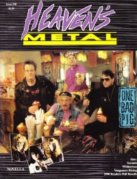

<!DOCTYPE PUBLIC "-//W3C//DTD XHTML 1.0 Transitional//EN" "http://www.w3.org/TR/1/DTD/1-transitional.dtd">
 xmlns="http://www.w3.org/1999/" xml:lang="en" lang="en">

<head>
<meta http-equiv="Content-Type" content="text; charset=utf-8" />
<title>Spiny Norman writing credits, page 1 :: CMnexus</title><link rel="stylesheet" href="../../../articles.css" type="text/css" title="CMnexus" /><meta name="viewport" content="width=device-width" /><meta name="title" content="Spiny Norman writing credits, page 1 :: CMnexus" /><meta name="color-scheme" content="light dark" /><meta name="description" content="Index of articles written by Spiny Norman, page 1, viewed as a timeline." /><meta name="theme-color" content="#669966" /><meta name="theme-color" content="#25282a" media="(prefers-color-scheme:dark)" /><meta name="keywords" content="Spiny Norman, writings" /><link rel="canonical" href="page1" /><link rel="image_src" href="../../../images/covers/HM1991_6_One_B_pr20.jpg" /><link rel="help" href="../../../about/" /><link rel="home" href="../../../" /><link rel="apple-touch-icon" type="image/png" href="../../../apple-touch-icon.png" />
</head>
<body bgcolor="#000067" text="#000000" link="#000066" vlink="#000066" alink="#660000" itemscope itemtype="http://schema.org/WebPage">
<table bgcolor="#FFFFFF" width="100%" cellspacing="0" cellpadding="8" class="p100pc" id="maintable">
<tr valign="top" class="">
<td bgcolor="#669966" colspan="2" class="navcolor noprint p0tnytny navtop" style="padding-bottom:0px" itemscope itemtype="http://schema.org/SiteNavigationElement">
<div  id="pagehead" class="tnytnytnyonlyin">
<b><a href="../../../"
title="CMnexus" border="0" class="img" align="center">CMnexus</a></b>
<span class="smalltnytny tnytnytnyonlyoff">: <i>Contemporary Christian culture, music, and media.</i></span>
</div>
<ul class="navbar nodisc din" style="padding-top:.5em;">
<li class="pr2em din mainnav" ><a title="Browse magazines" href="../../../magazines/">Magazines</a></li>
<li class="pr2em din mainnav" ><a title="Browse artists &amp; authors" href="../../">Profiles</a></li>
<li class="din mainnav" ><a title="GMA Dove Award nominees and winner listings" href="../../../awards/Dove_Awards">Dove Awards</a></li>

</ul>

</td>
</tr>
<tr valign="top" class="vaT">
<td class="vaT" id="cocol" width="*">
<div class="vaT flL b600" itemprop="breadcrumb"><span class="printonly">cmnexus.org</span><a class="noprint tnytnyonlyoff" href="../../../" title="Front page of the CMnexus" itemprop="url"><span class="tdn">CM</span>nexus</a><span class="tnytnyonlyoff"> &rarr; </span><a href="../../" title="Root index of all artists: Choose letter" rel="up up up" itemprop="url"><span itemprop="name">Profiles</span></a> &rarr; <a href="../../writers/N" title="All artists whose names begin with 'N'" rel="up up" itemprop="url"><span itemprop="name">N</span></a> &rarr; <a href="../../Spiny_Norman" class="profile"  title="Profile of Spiny Norman" rel="up" itemprop="url"><span itemprop="name">Spiny Norman</span></a></div><h1 class="sectiontitle clB mb0">Spiny Norman</h1><div class="m600px m0px" itemscope itemtype="http://schema.org/MusicGroup"><h2 class="mb1pr mt25pcempr">Writing credits listing</h2><ul style="margin:.5em 0px .5em -1em;" class="">
<li class="neg1emtnytny">Feb 1991 in <a href="../../../magazines/HM/1991/page1" title="Contents of Heaven's Metal Feb 1991, #28"><span class="magazine">Heaven's Metal</span> #28</a><ul class="neg1em"><li class=""><a href="../../Guardian" class="profile"  title="Profile of Guardian">Guardian</a> - <span class="album" title="The album 'Fire and Love' is by Guardian">Fire and Love</span></li>
</li><li class=""><a href="../../The_Awful_Truth" class="profile"  title="Profile of The Awful Truth">The Awful Truth</a> - <span class="album" title="The album 'The Awful Truth' is by The Awful Truth">The Awful Truth</span></li>
</li><li class=""><a href="../../Crystavox" class="profile"  title="Profile of Crystavox">Crystavox</a> - <span class="album" title="The album 'Crystavox' is by Crystavox">Crystavox</span></li>
</li><li class=""><a href="../../Seraiah" class="profile"  title="Profile of Seraiah">Seraiah</a> - <span class="album" title="The album 'Carnival World' is by Seraiah">Carnival World</span></li>
</li><li class=""><a href="../../Bride" class="profile"  title="Profile of Bride">Bride</a> - <span class="album" title="The album 'End of the Age' is by Bride">End of the Age</span></li>
</li></ul><li class="neg1emtnytny">Apr 1991 in <a href="../../../magazines/HM/1991/page2" title="Contents of Heaven's Metal Apr 1991, #29"><span class="magazine">Heaven's Metal</span> #29</a><ul class="neg1em"><li class=""><a href="../../Believer" class="profile"  title="Profile of Believer">Believer</a> - <span class="album" title="The album 'Sanity Obscure' is by Believer">Sanity Obscure</span></li>
<div class="flR clB" style="padding-bottom:2px;padding-top:2px;"><a href="../../../magazines/HM/1991/page3" title="Contents of Heaven's Metal Jun 1991, #30"></a></div></li></ul><li class="neg1emtnytny">Jun 1991 in <a href="../../../magazines/HM/1991/page3" title="Contents of Heaven's Metal Jun 1991, #30"><span class="magazine">Heaven's Metal</span> #30</a><ul class="neg1em"><li class="">"Smashing, Flying, Screaming Pigs"<div style="margin-left:1.5em"><a href="../../One_Bad_Pig" class="profile"  title="Profile of One Bad Pig">One Bad Pig</a>, <a href="../../Johnny_Cash" class="profile"  title="Profile of Johnny Cash">Johnny Cash</a>, <a href="../../Daniel_Tucek" class="profile"  title="Profile of Daniel Tucek">Daniel Tucek</a>; comments on lyrics</div></li>
</li></ul><li class="neg1emtnytny">Nov 1991 in <a href="../../../magazines/HM/1991/page5" title="Contents of Heaven's Metal Nov 1991, #32"><span class="magazine">Heaven's Metal</span> #32</a><ul class="neg1em"><li class="">various artists - <span class="album" title="The album 'Ultimate Rock Video 2' is by various artists">Ultimate Rock Video 2</span></li>
</li></ul><li class="neg1emtnytny">Mar 1992 in <a href="../../../magazines/HM/1992/page2" title="Contents of Heaven's Metal Mar 1992, #34"><span class="magazine">Heaven's Metal</span> #34</a><ul class="neg1em"><li class=""><a href="../../Justice_(metal)" class="profile"  title="Profile of Justice (metal)">Justice (metal)</a> - <span class="album" title="The album 'Counting Down' is by Justice (metal)">Counting Down</span></li>
</li></ul><li class="neg1emtnytny">Jan 1993 in <a href="../../../magazines/HM/1993/page1" title="Contents of Heaven's Metal Jan 1993, #39"><span class="magazine">Heaven's Metal</span> #39</a><ul class="neg1em"><li class=""><a href="../../Living_Sacrifice" class="profile"  title="Profile of Living Sacrifice">Living Sacrifice</a> - <span class="album" title="The album 'Nonexistent' is by Living Sacrifice">Nonexistent</span></li>
</li><li class=""><a href="../../Sacrament" class="profile"  title="Profile of Sacrament">Sacrament</a> - <span class="album" title="The album 'Haunts of Violence' is by Sacrament">Haunts of Violence</span></li>
</li><li class=""><a href="../../Larry_Howard" class="profile"  title="Profile of Larry Howard">Larry Howard</a> - <span class="album" title="The album 'Cornerstone Blues Jam' is by Larry Howard">Cornerstone Blues Jam</span></li>
</li><li class=""><a href="../../Crashdog" class="profile"  title="Profile of Crashdog">Crashdog</a> - <span class="album" title="The album 'Pursuit of Happiness' is by Crashdog">Pursuit of Happiness</span></li>
</li><li class=""><a href="../../Blood_Covenant" class="profile"  title="Profile of Blood Covenant">Blood Covenant</a> - <span class="album" title="The album '4-song demo' is by Blood Covenant">4-song demo</span></li>
</li></ul><li class="neg1emtnytny">Sep 1993 in <a href="../../../magazines/HM/1993/page5" title="Contents of Heaven's Metal Sep 1993, #43"><span class="magazine">Heaven's Metal</span> #43</a><ul class="neg1em"><li class="">Concert Review: <a href="../../Mortification" class="profile"  title="Profile of Mortification">Mortification</a>, <a href="../../Living_Sacrifice" class="profile"  title="Profile of Living Sacrifice">Living Sacrifice</a></li>
</li><li class=""><a href="../../Daniel_Band" class="profile"  title="Profile of Daniel Band">Daniel Band</a> - <span class="album" title="The album 'The Best of the Daniel Band' is by Daniel Band">The Best of the Daniel Band</span></li>
</li><li class=""><a href="../../Precious_Death" class="profile"  title="Profile of Precious Death">Precious Death</a> - <span class="album" title="The album 'Southpaw' is by Precious Death">Southpaw</span></li>
</li></ul><li class="neg1emtnytny">Nov 1993 in <a href="../../../magazines/HM/1993/page6" title="Contents of Heaven's Metal Nov 1993, #44"><span class="magazine">Heaven's Metal</span> #44</a><ul class="neg1em"><li class=""><a href="../../Petra" class="profile"  title="Profile of Petra">Petra</a> - <span class="album" title="The album 'Wake-Up Call' is by Petra">Wake-Up Call</span></li>
</li><li class="">various artists - <span class="album" title="The album 'All Hail The Power [video]' is by various artists">All Hail The Power [video]</span></li>
</li></ul><li class="neg1emtnytny">Mar 1994 in <a href="../../../magazines/HM/1994/page2" title="Contents of Heaven's Metal Mar 1994, #46"><span class="magazine">Heaven's Metal</span> #46</a><ul class="neg1em"><li class=""><a href="../../Passafist" class="profile"  title="Profile of Passafist">Passafist</a> - <span class="album" title="The album 'Passafist' is by Passafist">Passafist</span></li>
</li></ul><li class="neg1emtnytny">May 1995 in <a href="../../../magazines/HM/1995/page3" title="Contents of Heaven's Metal May 1995, #53"><span class="magazine">Heaven's Metal</span> #53</a><ul class="neg1em"><li class=""><a href="../../Plankeye" class="profile"  title="Profile of Plankeye">Plankeye</a> - <span class="album" title="The album 'The Spark' is by Plankeye">The Spark</span></li>
</li><li class=""><a href="../../Argyle_Park" class="profile"  title="Profile of Argyle Park">Argyle Park</a> - <span class="album" title="The album 'Misguided' is by Argyle Park">Misguided</span></li>
</li></ul><li class="neg1emtnytny">Sep 1998 in <a href="../../../magazines/HM/1998/page5" title="Contents of HM Sep 1998, #73"><span class="magazine">HM</span> #73</a><ul class="neg1em"><li class="">various artists - <span class="album" title="The album 'The Pick of the Litter Vol. 2' is by various artists">The Pick of the Litter Vol. 2</span></li>
</ul></div></td><td class="noprint lineC" style="min-width:150px;" width="150px" itemscope itemtype="http://schema.org/WPSideBar" id="rsidebar"><div><b>CMnexus</b> <i>(noun)</i><br />The magazine index<br />of modern music<br />and Christianity<br /></div></td></tr><tr class="smalltnytny" itemscope itemtype="http://schema.org/WPFooter"><td id="footer" class="navcolor pbnw" colspan="2"><div class="lineC">&copy; 2011 CMnexus. Last updated May 2025.<span class="printonly"> Contact: </span> <span class="noprint"> Rants and other correspondence to: </span> <!--BL-->editor -AT- cmnexus<span class="noshow"><!--BL--></span> -D&Oslash;T- org <a title="About the Nexus, general information" href="../../../about/" class="noprint">About</a></div></td></tr></table></body><>